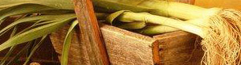

Chicken Pie
5 von 6geschnetzeltes poulet mit knoblauch anbraten. lauch und champignons dazugeben und mit weisswein ablöschen. ein wenig rahm dazu und abschmecken. in eine ofenfeste form geben und mit einem blätterteig bedecken. bei 200 grad ca. 20 min überbacken
